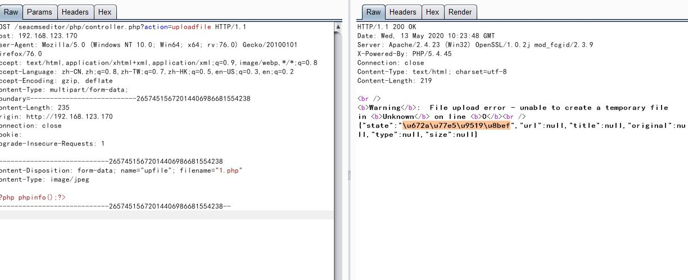

0x01 iseacms 熊海CMS 介绍🅰️
熊海CMS是由熊海开发的一款可广泛应用于个人博客，个人网站，企业网站的一套网站综合管理系统。
简的来说，就非常合适刚刚入门的 代码审计案例（简单到会看一点点php代码的人都会的审计），今天来复盘一下

（其实已经复盘过了，只是再复盘一遍来充实blog，嘻嘻😄）
0x02 实战
需要用到 seay源代码审计系统
个人喜欢直接上 自动审计所以，走一波

seay自动审计出来的，一般不一定100%存在漏洞，它原理是正则去匹配那些函数，比如 eval() 可能就 会写上关于eval() 函数的正则匹配。嘛。不过比起手动慢慢的看，能省去很多麻烦。有能力的也可以先代码通读 再自动化审计，每个人方法不一，我就 用我的方法。
点过去看到，带有正则匹配和转义的函数。
正则匹配**\W** 写死了。

接着往上看
/seacmseditor/php/controller.php：11行

这三个存在漏洞且能利用。
需要GET传参 action, switch 多选函数.
先第一个uploadfile 上传打开抓包上传试一下。

unicode 解码看一下\u672a\u77e5\u9519\u8bef => 未知错误 🙅
完美，未知错误
下一个，SQL注入
0x03 多处SQL注入
/files/content.php：19行
加了 转义函数
可以使用 宽字节注入(有条件)
报错注入
这里就使用 报错注入 把
宽字节注入需要 GBK编码
白盒审计 源代码 里明显没有单独设置 编码所以是不行的。

成功报出数据库
同样存在SQL注入的文件:
/files/software.php
/admin/files/reply.php
/admin/files/newlink.php